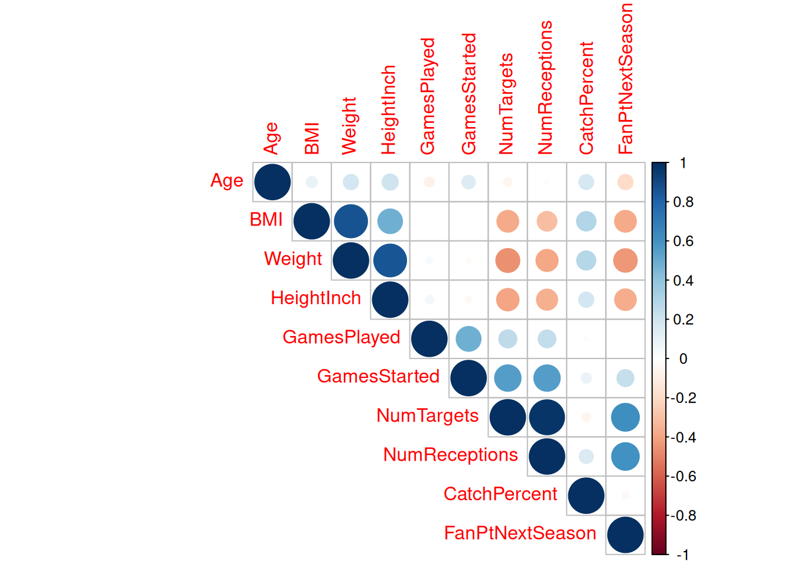

nfl <- bind_rows(nfl_2018, nfl_2019, nfl_2020, nfl_2021, nfl_2022) %>%
# Height conversion
mutate(HT = Ht....3) %>%
mutate(FT = ifelse(str_detect(HT, "May"), 5, 6)) %>%
mutate(IN = as.numeric(str_extract(HT, "[0-9]+"))) %>%
mutate(HeightInch = IN + (12 * FT)) %>%
# Changing col names
mutate(Weight= Wt.) %>%
mutate(TD = TD...4) %>%
mutate(GamesStarted = GS...5) %>%
mutate(PPR = PPR...6) %>%
mutate(FanPt = FantPt...15) %>%
mutate(CatchPercent = `Ctch%`) %>%
mutate(GamesPlayed = G) %>%
mutate(NumTargets = Tgt) %>%
mutate(NumReceptions = Rec) %>%
mutate(Position = Pos) %>%
# Create new col
mutate(FanPtNextSeason = NA) %>%
# Convert WR/QB position into WR
mutate(Position = if_else(Position == "WR/QB", "WR", Position)) %>%
# Choose second team if player played on 2 teams
mutate(Team = gsub("^.+,(.+)", "\\1", Team)) %>%
# Selecting columns used in analysis
select(Player, Season, Age, BMI, Weight, HeightInch, GamesPlayed, GamesStarted, NumTargets, NumReceptions, CatchPercent, Position, FanPt, FanPtNextSeason)
# Getting Fantasy Points for the next season and putting it in a row with current season
for(i in 1:590) {
name <- nfl$Player[i]
season <- nfl$Season[i]
# Finding next season score
for(j in 1:590) {
if(nfl$Player[j] == name && nfl$Season[j] == season + 1) {
nfl$FanPtNextSeason[i] = nfl$FanPt[j]
}
}
}
# Dropping players that don't have 2 consecutive seasons
nfl <- nfl %>%
drop_na()
# 290/590 observations
nfl <- nfl %>%
mutate(FanPtNextSeason_Center = FanPtNextSeason - median(FanPtNextSeason)) %>%
mutate(Age_Center = Age - median(Age)) %>%
mutate(GamesPlayed_Center = GamesPlayed - median(GamesPlayed)) %>%
mutate(BMI_Center = BMI - median(BMI)) %>%
mutate(NumTargets_Center = NumTargets - median(NumTargets)) %>%
mutate(NumReceptions_Center = NumReceptions - median(NumReceptions)) %>%
mutate(CatchPercent_Center = CatchPercent - median(CatchPercent)) %>%
mutate(GamesStarted_Center = GamesStarted - median(GamesStarted)) %>%
mutate(Weight_Center = Weight - median(Weight)) %>%
mutate(HeightInch_Center = HeightInch - median(HeightInch))Introduction
While many fans pick their favorite players in the draft, some diehard fans go all out, researching player statistics, reading “expert” opinions on ESPN.com, and creating detailed draft plans (Becker et al., 2016). With the rise of fantasy football, more fans will surely be picking their favorite players in the draft, unsure of how they might perform (Lutz, 2015). As fantasy football fans, but not diehards, we are interested in predicting fantasy outcomes for our favorite players without the need for countless hours of study. Given the lack of fantasy football models, especially those that take into account a player’s measurables (such as height and weight), we intend to look into how a player’s previous football performance and their measurables can be used to predict future fantasy football scoring outcomes.
We have three research questions of interest. First, what NFL measurables and statistics (on-field performance) are associated with higher fantasy point production for receivers (wide receivers and tight ends)? Second, how well can we predict fantasy point production using these variables? Last, and our primary question of interest, is a model taking into account a player’s measurables better or worse than one that is only based on previous on-field performance? We hypothesize that a model taking into account a player’s measurables is more accurate than one that solely takes into account previous on-field performance, because a player’s size has an effect on how they are used on the field.
Data
The data collected for this study was obtained from Stathead.com using the Player Season & Career Football Stats Finder feature (Stathead Football, 2023). We queried “For single seasons, in [Year], played WR or TE, in the regular season, requiring Receiving TD >= 0 and Fantasy Points (PPR) >= 1 and Games Started >= 8” for each year from 2017 to 2022 to obtain data about wide receivers and tight ends who started at least eight games and scored at least one fantasy point, from the 2017 to the 2022 NFL seasons. This study looks particularly at 13 variables. There is one response variable (Fantasy Points Scored Next Season), 10 predictor variables (Age, BMI, Weight, Height, Number of Targets, Number of Receptions, Catch Percentage, Games Played, Games Started, Position), and two variables that help organize the data (Player, Season). In order to get the player’s fantasy points for next season, the player must have consecutive seasons that align with our requirements. Thus, any ‘Player, Season’ observations that are not consecutive are removed from the dataset. This causes the removal of about half of the observations in the original dataset, though it can still be assumed that the data is representative of future NFL seasons due to our relatively large sample size (n = 290).
Certain variables were adjusted to provide clarity in our statistical analysis. The height variable needed to be converted to inches, so we could use it as a numeric variable. In order to do analysis on the next season, we needed to only have players who had Fantasy Points for the next season. Using Fantasy Points Scored, a variable that we collected from our query, we created Fantasy Points Scored Next Season which represents the Fantasy Points that a player scored during the next season. To ensure the intercepts of our models are close to zero, we centered all predictor variables on their respective median. The intercept should be close to zero because a player with no statistics (such as Age = 0) should not be expected to score fantasy points in the next season.
To answer our research question, we constructed three multiple linear regression models. Our first model used just the on-field variables (Number of Targets, Number of Receptions, Catch Percentage, Games Played, Games Started) to predict Fantasy Points Scored Next Season. Our second model used just physical player variables (Age, BMI, Weight, Height) to predict Fantasy Points Scored Next Season. Our third model is our final model using both on-field and physical player variables to predict Fantasy Points Scored Next Season. The first two models used every predictor variable (respective to the model), created with a simple multiple linear regression. The final model was created using stepwise regression to choose the best predictors. The predictor variables selected with stepwise regression were verified using best subset variable selection, which runs through all possible combinations of predictor variables. The final model has the highest adjusted R-squared value using a combination of both on-field and physical player variables
Cleaning the Dataset
Correlation
There is a strong positive correlation between BMI, height, and weight. This relates to the multicollinearity between BMI, Height, and Weight seen in the variance inflation factor. We used the variance inflation factor test to determine multicollinearity The variance inflation factor is calculated by assessing the r-squared value for each parameter in the model. 5 Moreover, there is a strong positive correlation between Number of Targets and Receptions. This strong positive correlation is connected to the multicollinearity between Number of Targets and Receptions. Furthermore, there is a strong positive correlation between Fantasy Points Next Year, and Number of Targets and Number of Receptions. However, there is a strong negative correlation between the Number of Fantasy Points Next Year and the BMI, Height, and Weight of the player. Additionally, there is a strong negative correlation between Number of Targets and Receptions, and BMI, Height, and Weight.
corr <- nfl %>%
select(Age, BMI, Weight, HeightInch, GamesPlayed, GamesStarted, NumTargets, NumReceptions, CatchPercent, FanPtNextSeason) %>%
cor()
corrplot(corr, type="upper")
# Stepwise Center Model
full_center_model <- lm(FanPtNextSeason_Center ~ Age_Center + GamesPlayed_Center + BMI_Center + NumTargets_Center + NumReceptions_Center + CatchPercent_Center + GamesStarted_Center + Weight_Center + HeightInch_Center, nfl)
summary(full_center_model)
zero_center_model <- lm(FanPtNextSeason_Center ~ 1, nfl)
step_center_model <- step(zero_center_model, direction = "both", scope = formula(full_center_model))
summary(step_center_model)
# Physical Player Center Model
body_center_model <- lm(FanPtNextSeason_Center ~ Age_Center + BMI_Center + Weight_Center + HeightInch_Center, nfl)
summary(body_center_model)
# Game Statistics Center Model
FanStats_center_model <- lm(FanPtNextSeason_Center ~ GamesPlayed_Center + NumTargets_Center + NumReceptions_Center + CatchPercent_Center + GamesStarted_Center, nfl)
summary(FanStats_center_model)Results
Our on-field variable model explains 40.14% of the variability in Fantasy Points Scored Next Season (with an adjusted R-squared of 0.4014). Our physical player variable model explains just 20.85% of the variability in Fantasy Points Scored Next Season. However, a model combining all on-field and physical player variables explains 44.03% of the variability in Fantasy Points Scored Next Season, and our final model explains even more of the variation in our response variable, with an adjusted R-squared of 0.4445. In other words, our final model explains just 45.45% of the variability in Fantasy Points Scored Next Season. All predictor variables in our final model are significant at the 0.01 level, and our final model fulfills the assumptions of a normal error linear model. 6 The variables Age, Weight, Number of Receptions, and Games Played were selected for our final model. It is clear that physical player variables have a significant effect on our response variable. When controlling for Weight, Number of Receptions, and Games Played, a one year increase in Age decreases the expected Fantasy Points Next Season by 2.74. When controlling for Age, Number of Receptions, and Games Played, a one pound increase in Weight decreases the expected Fantasy Points Next Season by 0.371. Moreover, it is unsurprisingly clear that on-field variables also have a significant effect. When controlling for Age, Weight, and Games Played, each additional reception increases the expected Fantasy Points Next Season by 1.12. When controlling for Age, Weight, and Number of Receptions, each additional Game Played decreases the expected Fantasy Points Next Season by 4.08 points. We are 95% confident that the true expected Fantasy Points Next Season for a player with Age = 0, Weight = 0, Number of Receptions = 0, and Games Played = 0 is between -4.22 and 7.03 points.
Confidence intervals
# Game Statistics
signif(confint(FanStats_center_model), digits = 3)
summary(FanStats_center_model)
# Physical Player Statistics
signif(confint(body_center_model), digits = 3)
summary(body_center_model)
# Full
signif(confint(full_center_model), digits = 3)
summary(full_center_model)
# Stepwise
signif(confint(step_center_model), digits = 3)
summary(step_center_model)Multicollinearity
signif(vif(full_center_model), digits = 3)
signif(vif(step_center_model), digits = 3)
signif(vif(body_center_model), digits = 3)
signif(vif(FanStats_center_model), digits = 3)Comparing Predicted Fantasy Points and Actual
# Changing centered FanPtNextSeason to not centered for easier graph interpretation
full_center_model <- lm(FanPtNextSeason ~ Age_Center + GamesPlayed_Center + BMI_Center + NumTargets_Center + NumReceptions_Center + CatchPercent_Center + GamesStarted_Center + Weight_Center + HeightInch_Center, nfl)
summary(full_center_model)
zero_center_model <- lm(FanPtNextSeason ~ 1, nfl)
step_center_model <- step(zero_center_model, direction = "both", scope = formula(full_center_model))
# Add fitted data to step model data
step_model_data <- nfl %>%
mutate(fitted = fitted(step_center_model))
body_center_model <- lm(FanPtNextSeason ~ Age_Center + BMI_Center + Weight_Center + HeightInch_Center, nfl)
body_center_data <- nfl %>%
mutate(fitted = fitted(body_center_model))
FanStats_center_model <- lm(FanPtNextSeason ~ GamesPlayed_Center + NumTargets_Center + NumReceptions_Center + CatchPercent_Center + GamesStarted_Center, nfl)
FanStats_center_data <- nfl %>%
mutate(fitted = fitted(FanStats_center_model))# Final with point labels
ggplot(step_model_data, aes(x = fitted, y = FanPtNextSeason))+
geom_point()+
geom_abline(intercept = 0, slope = 1, color="red")+
labs(title="Predicted vs. Actual Fantasy Points Next Season", x="Predicted Fantasy Points Next Season", y="Fantasy Points Next Season")+
geom_text_repel(aes(fitted, FanPtNextSeason, label = paste(Player, Season + 1))) Outliers (Cook’s Distance)
diag_step_model <- ls.diag(step_center_model)
step_model_data <- nfl %>%
mutate(cooks = diag_step_model$cooks) %>%
mutate(PredictedFanPtNextSeason = fitted(step_center_model))
step_model_data %>%
filter(cooks > 4/(290 - 5 - 1)) %>%
mutate(NumTarg = NumTargets_Center, NumRec = NumReceptions_Center, GamesStarted = GamesStarted_Center, Age = Age_Center) %>%
select(Player, Season, FanPtNextSeason, PredictedFanPtNextSeason, NumTarg, NumRec, GamesStarted, Age, Position, cooks) %>%
arrange(desc(cooks)) %>%
# Creating a table
kbl() %>%
kable_styling(bootstrap_options = c("striped", "hover", "condensed"))| Player | Season | FanPtNextSeason | PredictedFanPtNextSeason | NumTarg | NumRec | GamesStarted | Age | Position | cooks |
|---|---|---|---|---|---|---|---|---|---|
| Adam Thielen | 2019 | 180.0 | 90.762077 | -45 | -29.5 | -4 | 3 | WR | 0.0355837 |
| Travis Kelce | 2021 | 206.3 | 107.271500 | 41 | 32.5 | 2 | 6 | TE | 0.0346981 |
| JuJu Smith-Schuster | 2018 | 71.2 | 169.037223 | 73 | 51.5 | -1 | -4 | WR | 0.0296657 |
| Tyreek Hill | 2019 | 241.9 | 126.508221 | -4 | -1.5 | -2 | -1 | WR | 0.0253841 |
| Cooper Kupp | 2020 | 294.5 | 140.661510 | 31 | 32.5 | -2 | 1 | WR | 0.0252154 |
| Travis Kelce | 2019 | 207.8 | 118.373828 | 43 | 37.5 | 2 | 4 | TE | 0.0240142 |
| Cooper Kupp | 2018 | 176.5 | 116.308718 | -38 | -19.5 | -6 | -1 | WR | 0.0232316 |
| Davante Adams | 2019 | 243.4 | 140.203229 | 34 | 23.5 | -2 | 1 | WR | 0.0225230 |
| Cooper Kupp | 2021 | 126.4 | 189.302554 | 98 | 85.5 | 3 | 2 | WR | 0.0210253 |
| Darren Fells | 2018 | 76.1 | 8.831637 | -81 | -48.5 | -3 | 6 | TE | 0.0200830 |
| Davante Adams | 2021 | 235.5 | 163.326030 | 76 | 63.5 | 2 | 3 | WR | 0.0174965 |
| Jalen Reagor | 2020 | 45.1 | 108.995378 | -39 | -28.5 | -3 | -5 | WR | 0.0173854 |
| Julio Jones | 2020 | 49.4 | 103.675779 | -25 | -8.5 | -5 | 5 | WR | 0.0163152 |
| Darnell Mooney | 2021 | 61.5 | 141.354755 | 47 | 21.5 | 0 | -2 | WR | 0.0153599 |
| Allen Robinson | 2020 | 49.0 | 143.357545 | 58 | 42.5 | 2 | 1 | WR | 0.0144785 |
Conclusion
In conclusion, a model that takes into account a player’s measurables along with on-field performance is better than a model that is based solely on on-field statistics. It is clear that both on-field statistics and player measurables are statistically significant when predicting a player’s fantasy points in the following season, though they are not perfect predictors by themselves. According to our model selected with stepwise regression, out of our variables of interest, Age, Weight, Number of Receptions, and Games Played are the best predictors of Fantasy Points Next Season. Fantasy football players can reasonably use our model to predict future fantasy football scoring outcomes. 7 Our sample is representative of NFL starting wide receivers and tight ends, because we collected our data using parameters that selected all starting wide receivers and tight ends in a five-year period (NFL seasons 2017-2022). While this model is not very useful in predicting, say, college football, it is still potentially useful for predicting future fantasy football outcomes until there is a significant NFL rule change that affects receivers. We doubt that there is much measurement error — there are dozens, if not more, of groups tracking all sorts of NFL statistics that can verify measurement accuracy. Our model seems to fit pretty well within other NFL models. Most significantly, the Games Played predictor coefficient. Our coefficient is strongly negative, at -4.08, with a 95% confidence interval of -6.57 to -1.60. It is clear that there is a negative correlation between Games Played and Fantasy Points Next Season. This may seem contradictory at first, but actually the number of games a player plays in strongly increases their chance of sustaining an injury. NFL injuries are incredibly common, due to the nature of American football being a full-contact sport. It makes sense that the more games a player plays in increases the risk of injury, which causes them to miss games, and thus they could lose opportunities to score more fantasy points in the next season. For example, if a wide receiver tears their achilles in November of the 2021 NFL season, they will likely miss games early in the next season due to the nine to 12 month recovery period. The prediction our model makes based on Games Played lines up with major NFL injury prediction models. Our model does have some limitations. There are possible confounding variables that may affect our predictors and response variable, such as team win percentage, injuries, and touchdowns. We did not include these variables because they were either unavailable in our Stathead query, or because we believed they would have a significant amount of multicollinearity with our other variables. Besides this, our model would be more accurate if it were more specific. We include both tight ends and wide receivers in our dataset, since we want to look at all receivers, but a better approach to pure fantasy football predicting would be to create a separate model for each position. Though there are a substantial number of NFL injury prediction models, as above, for each individual player injuries are inherently predictable. If a player unexpectedly ends their season early, their predictions for the following year may be skewed. 8 Going forward, there are many avenues to create better prediction models. Future research can take into account the limitations of our model, and factor in position group specificity and injury predictions in a new model. The creation of new models should take into account both on-field statistics and player measurements, though the use of new variables could render this combination unnecessary. Fantasy football is an increasingly popular game among NFL fans, and there is a clear desire for models that help both die hard and casual fans draft the best possible team.